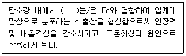
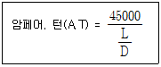

자기비파괴검사기사 (2020-06-06 기출문제)
1과목: 비파괴검사 개론
1. 동일 조건에서 모세관의 반지름이 2배로 늘어나면 모세관속 액체의 높이는 어떻게 되는가?
- 1/4로 낮아진다.
- 1/2로 낮아진다.
- 2베로 높아진다.
- 4배로 높아진다.
(정답률: 63%)

2. 셀레늄(Selenium) 등의 반도체 뒤에 금속판을 대고 균일한 전하를 준 후 시험체를 투과한 방사선에 노출되면 방사선이 강도에 따라 반도체의 저항이 작아지고 전하가 이동하여 방전하게 되는데, 여기에 반대 전하를 도포하면 육안으로 확인 가능한 영상이 형성되며 이에 적절한 수지를 도포함으로써 영상을 형성할 수 있다. 이 원리를 이용하는 방법은?
- 건식 방사선 투과검사법(Xeroradiography)
- 전자 방사선 투과검사법(Electron radiography)
- 자동 방사선 투과검사법(Autoradiography)
- 순간 방사선 투과검사법(Flash radiography)
(정답률: 57%)
3. 결함의 유해성에 관한 설명 중 옳은 것은?
- 결함은 가지고 있는 구조물의 강도가 저하하는 양상은 그 결함의 형상과 방향에 따라 다르다.
- 곡면이 있는 결함은 주로 단면적의 감소에 기인하여 강도를 증가시킨다.
- 가늘고 긴 결함은 단면적의 감소 이외에 결함부의 지시 길이에 기인하여 강도를 증가시킨다.
- 표면결함과 내부결함에서 동일종류, 동일치수의 결함이면 내부결함의 경우가 표면결함보다 유해하다.
(정답률: 45%)
4. 비파괴시험 기술자의 임무라 볼 수 없는 것은?
- 시험결과의 정확한 판정
- 제조공정의 철저한 관리
- 제품의 품질보증에 대한 책임
- 시험기술 향상을 위해 꾸준한 노력
(정답률: 69%)
5. 다음 중 발(기)포누설검사법(Bubble Test)에서 소크시간(soak time)에 해당되는 것은?
- 검사용액을 혼합하고 적용하는데 소요되는 시간
- 검사용액을 적용한 후 관찰할 때까지 소요되는 시간
- 가압의 완료 시점과 용액의 적용시점 사이의 시간
- 시험에 소요되는 총 시간
(정답률: 64%)
6. SM45C의 탄소 함유량은 약 몇 % 인가?
- 0.045
- 0.12
- 0.45
- 1.2
(정답률: 64%)
7. 순철의 냉각에서 A3 변태에 대한 설명으로 옳은 것은?
- 온도는 약 1410℃ 이다.
- 부피가 감소하는 변화이다.
- 결정구조의 변화를 수반한다.
- 공정 반응이다.
(정답률: 53%)
8. 다음 주석에 대한 설명으로 틀린 것은?
- 화학기호는 Sn이다.
- 상온가공경화가 없으므로 소성가공이 쉽다.
- 비중은 약 10.3이고, 융점은 약 670℃ 정도이다.
- 무독성이므로 의약품, 식품 등의 포장용, 튜브에 사용된다.
(정답률: 48%)
9. 다음 합금 중 형상기억 효과가 있는 것은?
- Mn - B
- Co - W
- Cr - Co
- Ti – Ni
(정답률: 53%)
10. 알루미늄 합금의 질별 기호가 잘못 짝지어진 것은?
- O : 어닐링한 것
- H : 가공 경화한 것
- W : 용체화 처리한 것
- F : 용체화 처리 후 자연시효한 것
(정답률: 40%)
11. 재료의 정적 파괴응력보다 작은 응력을 장시간 동안 반복적으로 받는 경우에 파괴되는 현상은?
- 마모
- 피로
- 크리프
- 샤르피
(정답률: 68%)
12. 다음 ( )안에 들어갈 원소는?

- Cu
- S
- Mn
- Si
(정답률: 57%)
13. Mg 합금에 대한 설명으로 틀린 것은?
- 소성가공성이 높아 상온변형이 쉽다.
- 비강도가 커서 항공기나 자동차 재료 등으로 사용된다.
- 감쇠능이 커서 소으망지 재료로 우수하다.
- 구상 흑연주철의 첨가제로 사용된다.
(정답률: 47%)
14. 금속의 인장시험 시 측정되는 다음 항목들 중 가장 높은 응력 값을 나타내는 것은?
- 인장 강도
- 항복 강도
- 탄성 강도
- 피로 강도
(정답률: 52%)
15. 실루민을 개량처리하는 이유로 옳은 것은?
- 공정점 부근의 주조조직으로 나타나는 Si 결정을 미세화 시키기 위해
- 공정점 부근의 주조조직으로 나타나는 Al 결정을 미세화 시키기 위해
- 공정점 부근의 주조조직으로 나타나는 Zn 결정을 미세화 시키기 위해
- 공정점 부근의 주조조직으로 나타나는 Sn 결정을 미세화 시키기 위해
(정답률: 54%)
16. 용접 작업으로 인하여 발생하는 잔류 응력을 제거하는 방법으로 틀린 것은?
- 솔더링
- 피닝법
- 국부 풀림법
- 저온 응력 완화법
(정답률: 52%)
17. 저수소계 피복 아크 용접봉의 건조온도 및 건조시간으로 다음 중 가장 적합한 것은?
- 100~150℃, 30분
- 200~300℃, 1시간
- 150~200℃, 2시간
- 300~350℃, 1~2시간
(정답률: 37%)
18. 다음 중 노치취성 시험방법이 아닌 것은?
- 슈나트 시험
- 코머렐 시험
- 샤르피 시험
- 카안인열 시험
(정답률: 40%)
19. 아크 용접기의 1차측 입력이 20kVA인 경우 가장 적합한 퓨즈의 용량은? (단, 이 용접기의 전원전압은 200V 이다.)
- 10A
- 50A
- 100A
- 200A
(정답률: 54%)
20. 가소 금속 아크 용접에서 용융 금속의 이동 형태가 아닌 것은?
- 단락 이행
- 입상 이행
- 롤러 이행
- 스프레이 이행
(정답률: 47%)
2과목: 자기탐상검사 원리
21. 다음 중 전류관통법을 설명한 것으로 틀린 것은?
- 전기적 접촉이 필요 없고, 아크 발생가능성이 없다.
- 도체를 내면에 가까이 하여도 유효자계의 변화는 없다.
- 지름이 큰 부품은 자화과정 중 부품의 회전과 내면에 대하여 반복적인 자화가 필요하다.
- 원통 시험체의 바깥 원주면을 검사할 때는 외경에 비례하는 크기의 충분한 전류치가 필요하다.
(정답률: 50%)
22. 자분탐상시험으로 미세한 표면 균열을 검출하기 위한 사용전류와 자분의 조합 중 감도가 가장 우수한 시험방법은?
- 교류-습식자분
- 교류-건식자분
- 직류-습식자분
- 직류-건식자분
(정답률: 64%)
23. 다음 중 자분탐상시험에 사용되는 자분에 요구되는 특성으로 옳지 않은 것은?
- 높은 투자율
- 높은 항자성
- 낮은 보자성
- 좋은 분산성
(정답률: 74%)
24. 어떤 물질을 자화한 후에 자화력을 제거해도 어느 정도의 자화상태를 나타내는 물질에 성질을 무엇이라 하는가?
- 투자율
- 보자력
- 반자계
- 보자성
(정답률: 58%)
25. 자분모양의 기록방법 중 전사에 설명으로 잘못된 것은?
- 점착성 테이프에 전사한 것을 복사해 두면 장기간 보존할 수 있다.
- 셀로판 테이프가 가장 많이 사용된다.
- 자기 테이프에 녹자하는 방법이 있다.
- 점착성 테이프에 자분지시모양을 전사하는 방법은 습식흑색자분을 전사하는 것이 좋다.
(정답률: 48%)
26. 분극(Polarity)이 연속적으로 반전하는 자계에 부품을 놓고 점차 강도를 줄인다면 이는 어니 작업이 예상되는가?
- 부품을 자화한다.
- 부품을 탈자한다.
- 잔류자계를 증가한다.
- 깊이 있는 결함의 검출을 용이하게 한다.
(정답률: 73%)
27. 투자율과 직경이 같고 길이가 다른 페라이트봉을 직접통전법으로 자화시킬 때 봉의 길이에 따른 자장의 강도는 어떤 관계를 나타내는가?
- 자장의 강도는 봉의 길이에 비례한다.
- 자장의 강도는 봉의 길이에 반비례한다.
- 자장의 강도는 봉 길이의 제곱에 반비례한다.
- 자장의 강도와 봉의 길이는 무관하다.
(정답률: 46%)
28. 속이 빈 원통 시험체의 중심에 비자성 도체를 두어 전류 관통법으로 자화시키면 자속밀도가 가장 높은 부위는 다음 중 어느 곳인가?
- 중심도체의 중심
- 중심도체의 표면
- 시험체의 내부 표면
- 시험체의 외부 표면
(정답률: 59%)
29. 다음의 자성재료의 분류에서 자분탐상법으로 검사할 수 있는 재료는?
- 반자성체
- 상자성체
- 플라스틱
- 강자성체
(정답률: 75%)
30. 다음 중 강재의 자화곡선변화를 설명한 것으로 옳은 것은?
- 담금질 효과가 클수록 잔류자속밀도는 약간 크게 된다.
- 풀림 한 것에 비해 담금질한 것은 자기포화에 필요한 자장의 강도가 커진다.
- 탄소 함유량이 작을수록 잔류자속밀도는 약간 작게 된다.
- 담금질 효과가 클수록 포화자속밀도는 약간 크게 된다.
(정답률: 49%)
31. 강구조물의 용접부 표면을 평활하게 다듬고 자분탐상시험을 할 경우 다음 중 일반적으로 가장 경미하게 보아도 되는 결함은?
- 균열
- 언더컷
- 갈라짐(Fissure)
- 블로홀
(정답률: 58%)
32. 상자성체를 자계안에 놓을 때 내용 중 틀린 것은?(오류 신고가 접수된 문제입니다. 반드시 정답과 해설을 확인하시기 바랍니다.)
- 상자성체의 오른쪽 끝에 S극, 왼쪽 끝에 N극이 발생한다.
- 극이 형성되는 현상을 자기유도라 한다.
- 상자성체에 속하는 물질은 Fe, Ni, Co, Al 등이 있다.
- 반자계가 발생한다.
(정답률: 43%)
33. 선형자화법으로 길이가 9인치, 직경이 3인치인 환봉을 코일로 3회 감아 검사할 때의 전류값은?
- 3000A
- 4500A
- 5000A
- 6000A
(정답률: 59%)
34. 다음 사항 중 자화곡선의 변화와 관계없는 것은?
- 탄소 함유량
- 동위원소 함유량
- 가공상태
- 열처리
(정답률: 63%)
35. 의자지시모양(의사모양)에 대한 설명으로 옳은 것은?
- 언더컷 등의 표면 결함
- 균열 이외의 미세한 결함 자분모양
- 내부 선형결함에 의한 희미한 자분지시모양
- 결함 이외의 원인으로 나타나는 자분지시모양
(정답률: 75%)
36. 다음 중 탈자를 하지 않고 재시험을 하여도 무방한 경우는?
- 자기 펜 흔적으로 의심되는 지시가 나타나 재검사하는 경우
- 국부적인 냉간 가공부에서 지시가 나타나 결함 여부를 확인하기 위하여 재검사하는 경우
- 국부적인 용접 보수 면에서 지시가 나타나 결함 여부를 확인하기 위하여 재검사하는 경우
- 자화전류의 계산이 잘못되어 초기 자화전류보다 높은 전류로 재검사하는 경우
(정답률: 72%)
37. 다음 중 교류 성분이 가장 강하게 나타나는 전류는?
- 삼상전파
- 삼상반파
- 단상전파
- 단상반파
(정답률: 41%)
38. 자분탐상검사에서 자분의 적용에 대한 설명 중 틀린 것은?
- 습식법에서 자분의 입도가 작을수록 좋다.
- 건식법은 습식법에 비해 고온부의 시험에 적용하기 어렵다.
- 습식법에서 분산매로 백등유 또는 물이 이용된다.
- 건식자분을 적용할 때에는 탐상명르 잘 건조하여야 한다.
(정답률: 73%)
39. 자분탐상검사에서 시험체의 자화에 영향을 미치는 인자가 아닌 것은?
- 시험체의 자기특성
- 시험체의 형상
- 시험체의 밀도
- 시험체에 작용하는 자계 방향
(정답률: 51%)
40. 표피효과에 영향으로 인하여 시험체의 표층부 이외에는 자화가 어려운 전류 형태는?
- 직류
- 교류
- 맥류
- 전류
(정답률: 67%)
3과목: 자기탐상검사 시험
41. 자분탐상 시험 중 전처리에 대한 설명 중 틀린 것은?
- 전처리의 범위는 시험부위보다 넓게 한다.
- 시험품은 조립된 상태에서 검사하는 것이 효과적이다.
- 녹 등의 오염물은 쇠솔질이나 블라스팅으로 전처리한다.
- 기름류는 증기탈지, 세제 등으로 제거한다.
(정답률: 68%)
42. 자분탐상검사 시 나타난 지시를 기록하는 방법 중 특수한 목적을 위하여 자분모양을 시험면에 그대로 두고자할 때 적용방법은?
- 기록지(Sketch)에 그린다.
- 테이프(Tape)로 전사한다.
- 래커(Lacquer)를 바른다.
- 사진 촬영을 한다.
(정답률: 57%)
43. 다음 중 자분탐상시험에서 전처리를 하는 목적으로 타당하지 않은 것은?
- 탐상시험에 관계되는 여러 조작으로부터 시험품의 손상을 방지한다.
- 시험 후 시험체에 잔류자장이 남는 것을 방지한다.
- 결함부에 자분 부착량을 늘리어 결함지시 모양의 관찰 및 미세결함의 검출을 쉽게한다.
- 결함 이외의 부분에 부착되는 자분량을 가급적 적게하여 결함지시 모양의 관찰을 쉽게한다.
(정답률: 62%)
44. 프로드법에서 탐상휴요 범위에 영향을 주는 요인이 아닌 것은?
- 프로드의 길이
- 시험 전류의 종류
- 시험 전류의 크기
- 자분 및 검사액
(정답률: 54%)
45. 프로드법에 대한 설명으로 맞지 않는 것은?
- 부품, 구조물의 부분탐상을 위하여 원형자장을 형성할 때 사용한다.
- 시험품에 직접 자화전류를 보낸다.
- 전극 동봉의 굵기는 자화전류의 크기에 따라 정할 필요가 없다.
- 프로드법은 전기적 스파크를 방지하기 위한 특별한 조치는 필요없다.
(정답률: 70%)
46. 강자성체를 자화할 때 자계의 세기를 점점 증가시키게 되면 자속밀도도 증가하는데, 어느점에 이르게 되면 자속밀도가 증가되지 않는 현상을 무엇이라 하는가?
- 자기 저항
- 자기 자화
- 자기 포화
- 자분 포화
(정답률: 72%)
47. 다음 중 탈자를 필요로 하는 경우에 해당되는 것은?
- 시험체를 처음보다 더 낮은 자계의 세기로 방향을 달리하여 자화할 때
- 시험체를 큐리점 이상으로 열처리하는 경우
- 시험체가 연철이거나 낮은 보자성을 갖고 있을 때
- 시험체를 처음보다 더 높은 자계의 세기로 방향성을 달리하여 다시 자화할 때
(정답률: 59%)
48. 극간법으로 강용접부를 자분탐상검사는 경우의 설명으로 옳은 것은?
- 탐상유효범위는 예상되는 결함의 방향에 대하여 자계의 방향과 수평이 되게 한다.
- 휴대형 극간식 탐상기의 통상의 접촉상태에서 자극주위의 2~3mm가 불감대역이다.
- 자화전류치는 자극 1인치당 70~100A의 범위이다.
- 자계의 강도는 전류치와 자극간격에 따라 자유롭게 변한다.
(정답률: 56%)
49. 자분탐상검사 후 시험체의 자극이 있는지 여부를 알기 위하여 간이형 자장지시계를 사용할 때 가장 관계가 깊은 인자는?
- 유도성
- 튜과성
- 자력선수
- 잔류자기
(정답률: 70%)
50. 프로드법에서 전극에 구리망사를 입히는 주된 이유는?
- 전류가 잘 통하도록 도와준다.
- 전극부위의 자속밀도를 높이기 때문이다.
- 검사품에 골고루 자계를 유도하기 위함이다.
- 접촉면을 넓게 하고 스파크에 의한 제품의 손상을 줄이기 때문이다.
(정답률: 70%)
51. 어떤 재료의 자기이력곡선에서 자속밀도가 “0”을 나타내는 자계의 값을 무엇이라 하는가?
- 누설 자계
- 잔류 자계
- 유효 자계
- 보자력
(정답률: 51%)
52. 다음 중 탄소 함유량이 높은 공구강, 스프링강과 같이 시험체의 보자성이 큰 경우에 적용되며 표면의 불연속 검출에 국한되는 자분탐상 검사방법은?
- 잔류법
- 연속법
- 습식법
- 건식법
(정답률: 56%)
53. 다음 중 평판용접부의 열처리 후 자분탐상검사를 실시하고자 할 때 어떤 자분탐상검사법이 가장 적절한가?
- 습식 극간법
- 습식 코일법
- 건식 통전법
- 건식 다축자화법
(정답률: 68%)
54. 용접부 검사에서 자분탐상시험이 적합하지 않은 것은?
- 개선면 검사
- 뒷면 따내기한 면의 검사
- 용접 중간층 검사
- 용접 후 표면 검사
(정답률: 54%)
55. 강자성 물질의 결함을 건식법으로 검출할대 가장 발견하기 어려운 것은?
- 아주 좁은 균열
- 흩어져 있는 내부 기공
- 단조 겹침
- 언더컷(unsercut)
(정답률: 53%)
56. 다음 중 자분탐상검사의 적용에 관한 설명으로 틀린 것은?
- 강판의 검사에는 일반적으로 프로드법, 요크법 등이 적용된다.
- 봉강의 검사에는 일반적으로 축통전법이 축통전법며, 필요 시 극간법도 적용될 수 있다.
- 강관의 검사에는 축통전법, 전류관통법 등이 널리 이용된다.
- 평판 용접부의 검사에는 전류관통법, 프로드법, 요크법 등이 적용된다.
(정답률: 51%)
57. 자분을 물에 균일하게 분산시키기 위함과 시험체에 균일하게 적시도록 하기 위해 첨가하는 첨가물은?
- 계면활성제
- 소포제
- 방청제
- 솔벤트
(정답률: 63%)
58. 길이 6인치, 직경 2인치인 봉을 선형자화법인 코일법으로 검사하고자 할 때 5회의 코일을 감아 사용하였다면 이 때의 전류치[A]로 적당한 것은?
- 1200[A]
- 2000[A]
- 3000[A]
- 6000[A]
(정답률: 70%)
59. 다음 중 비형광 자분 검사액의 농도는?
- 1~5 g/ℓ
- 0.2~2 g/ℓ
- 2~10 g/ℓ
- 5~15 g/ℓ
(정답률: 46%)
60. 다음 중 자분탐상검사를 하기에 가장 적합한 재질은?
- 구리 합금
- 니켈 합금
- 티타늄 합금
- 알루미늄 합금
(정답률: 62%)
4과목: 자기탐상검사 규격
61. 보일러 및 압력용기에 대한 자분탐상검사(ASMe Sec. V Art.7)의 kotos(Betz) 링 시험편의 설명 중 옳은 것은?
- 재료는 냉간 압연한 평판 공구강이다.
- 재료는 담금질한 봉형 자재 공구강이다.
- 구멍은 6개로 지름이 0.8mm(0.03인치)이다.
- 구멍은 12개로 지름이 1.8mm(0.07인치)이다.
(정답률: 53%)
62. 강자성 재료의 자분탐상검사 방법 및 자분모양의 분류(KS D 0213)에서 자계의 방향과 불연속이 평행한다면 예상되는 자분모양 지시는?
- 자분모양이 나타나지 않는다.
- 미약하고 넓게 자분모양이 나타난다.
- 흩어진 자분모양이 나타난다.
- 선명한 자분모양이 나타난다.
(정답률: 60%)
63. 강자성 재료의 자분탐상검사 방법 및 자분모양의 분류(KS D 0213)에서 시험장치에 관한 사항으로, 자석형 장치에는 검사대상체에 투입 가능한 무엇을 명기하여야 하는가?
- 최대 자속
- 전류의 종류
- 전류의 주파수
- 최대 전류치
(정답률: 44%)
64. 보일러 및 압력용기에 대한 자분탐상검사(ASMe Sec. V Art.7)에 따라서 25mm 두께의 용접부에 대해서 검사를 실시하기 위해서 전처리를 해야 하는데 최소 전처리 범위로 옳은 것은?
- 5mm
- 15mm
- 25mm
- 35mm
(정답률: 68%)
65. 보일러 및 압력용기에 대한 표준자분탐상검사(ASME Sec. V Art. 25 SE-709)에 따라 외경 5인치 크기의 원형부품을 직경 1인치의 중심도체를 사용하여 자분탐상시험을 하고자 한다. 중심도체의 직경에 따른 검사유효범위 때문에 원형 부품을 몇 번 나누어 자화시켜야 하는가? (단, 원형부품의 중심부는 뚫려 있다.)
- 1번 자화
- 2번 자화
- 3번 자화
- 4번 자화
(정답률: 47%)
66. ASME Sec. Ⅷ, Div.1 App.6에서 관련 결함으로 판단하는 결함의 크기의 최소 기준으로 옳은 것은?
- 0.6mm
- 1.6mm
- 2.6mm
- 3.6mm
(정답률: 55%)
67. 보일러 및 압력용기에 대한 자분탐상검사(ASMe Sec. V Art.7)에 따른 자분탐상시험에서 습식자분의 농도를 측정하고자 할 때 최소한 얼마 동안 재순환 시스템을 한 후 샘플을 채취해야 하는가?
- 15분
- 30분
- 45분
- 60분
(정답률: 46%)
68. 배관 용접부의 비파괴 시험방법(KS B 0888)에 따라 자분탐상검사를 수행할 때, 적용해야 하는 자화방법은?
- 교류 프로드법
- 직류 프로드법
- 교류 극간법
- 직류 극간법
(정답률: 44%)
69. 강자성 재료의 자분탐상검사 방법 및 자분모양의 분류(KS D 0213)에서 규정한 자화에 대한 설명으로 틀린 것은?
- 교류 및 충격전류를 써서 자화시키는 경우 원칙적으로 표면 흠의 검출에 한한다.
- 교류를 써서 자화시키는 경우는 원칙적으로 연속법에 한한다.
- 맥류 및 직류를 써서 자화하는 경우는 표면 흠 및 표면 근방의 내부의 흠을 검출할 수 있다.
- 직류는 표피효과의 영향에 따라 표면 아래의 자화는 교류에 비하여 약하다.
(정답률: 64%)
70. 보일러 및 압력용기에 대한 자분탐상검사(ASMe Sec. V Art.7)에 따라 축통전법에 의한 원형자화를 적용하고자 할 때, 자화전류에 대한 다음 설명 중 올바른 것은?
- 교류만 사용한다.
- 시험체의 내경을 기준하여 결정한다.
- 원형이 아닌 경우 전류 흐름 방향에 수직인 단면의 최소 대각선길이를 기준하여 전류를 결정한다.
- 필요한 전류를 얻기 어려울 경우 얻을 수 있는 최대전류를 사용하고, 적절성 여부를 자분자장지시계 등을 이용하여 판단한다.
(정답률: 49%)
71. 보일러 및 압력용기에 대한 표준자분탐상검사(ASME Sec. V Art. 25 SE-709)에 따라 자분탐상검사를 할 때 열쇠구멍이나 드릴구멍과 같이 두께 변화나 재질의 고유특성 때문에 누설자속에 의해 생성되는 자분지시는?
- 불연속(Discotinuities)
- 거짓지시(False Indications)
- 관련지시(Relevant Indications)
- 무관련지시(Nonrelevant Indications)
(정답률: 56%)
72. 강자성 재료의 자분탐상검사 방법 및 자분모양의 분류(KS D 0213)에 따라 가장 낮은 유효자계의 강도에서 자분모양이 나타날 수 있는 시험편은?
- A1-7/50(직선형)
- A2-7/50(직선형)
- A1-15/50(직선형)
- A2-15/50(직선형)
(정답률: 53%)
73. 보일러 및 압력용기에 대한 자분탐상검사(ASMe Sec. V Art.7)에서 다음과 같은 식을 사용하는 자화방법은? (단, L : 시험체의 길이, D : 단면지름이다.)

- 원형자화법
- 선형자화법
- 평행자화법
- 벡타자화법
(정답률: 60%)
74. 강자성 재료의 자분탐상검사 방법 및 자분모양의 분류(KS D 0213)의 자분적용에 대한 설명으로 틀린 것은?
- 잔류법에서는 자화조작 종류 후에 자분을 적용한다.
- 연속법에서는 자화조작 중에 자분의 적용을 완료한다.
- 습식법의 경우 검사액의 유속이 과도하지 않도록 해야 한다.
- 건식법의 경우 시험면에는 가벼운 진동도 주어서는 안 된다.
(정답률: 64%)
75. 비파괴검사-자분탐상검사-제1부 : 일반원리(KS B ISO 9934-1)에서는 자화의 확인을 여러 가지 방법을 사용하여 표면 자속밀도가 적절한지를 알아보도록 하고 있다. 자화의 확인 방법이 아닌 것은?
- 가장 열악한 장소에서 미세한 자연 또는 인공불연속을 포함하는 시험편을 검사하여 확인한다.
- 직접통전법에서의 자속밀도는 표면에 가능한 한 가깝게 하여 접선의 자계강도를 측정한다.
- 자계강도의 확인은 표면에 자속지시계(shim 형태)를 놓고 측정한다.
- 직접 통전법을 이용하는 경우는 접선의 자계강도를 계산하여 확인한다.
(정답률: 31%)
76. 강자성 재료의 자분탐상검사 방법 및 자분모양의 분류(KS D 0213)에서 A형 표준시험편에서 원의 직경은?
- 5mm
- 10mm
- 15mm
- 20mm
(정답률: 50%)
77. 강자성 재료의 자분탐상검사 방법 및 자분모양의 분류(KS D 0213)에 의해 탐상결과에 따른 자분모양을 모양 및 집중성에 따라 분류한 것이 아닌 것은?
- 연속된 자분모양
- 독립된 자분모양
- 균열에 의한 자분모양
- 군집된 자분모양
(정답률: 48%)
78. ASME Sec. Ⅷ Div.1에 의거하여 자분탐상검사를 수행하였을 때, 길이가 각각 5mm, 3mm, 1mm인 선형지시 3개와 크기가 각각 3mm, 1.5mm인 원형지시 2개가 검출되었고 모든 지시들 사이의 간격이 3mm이었다면 평가대상이 되는 지시 길이의 총합은?
- 11mm
- 13.5mm
- 15.5mm
- 17.5mm
(정답률: 44%)
79. 강자성 재료의 자분탐상검사 방법 및 자분모양의 분류(KS D 0213)의 B형 대비시험편에 대한 설명으로 옳은 것은?
- 잔류법으로 사용한다.
- 인공 흠의 치수는 깊이 8mm, 나비 20mm로 한다.
- 장치, 자분 및 검사액의 성능 조사에 사용한다.
- 시험편의 직경은 10, 50, 100, 150, 200mm가 있다.
(정답률: 55%)
80. 강자성 재료의 자분탐상검사 방법 및 자분모양의 분류(KS D 0213)에서 자분의 적용시기에 따른 시험방법의 분류로 옳은 것은?
- 건식법, 습식법
- 연속법, 잔류법
- 직류, 맥류
- 직각통전법, 극간법
(정답률: 68%)